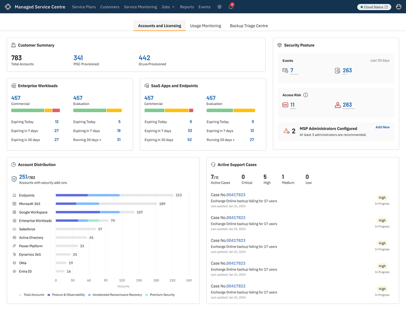
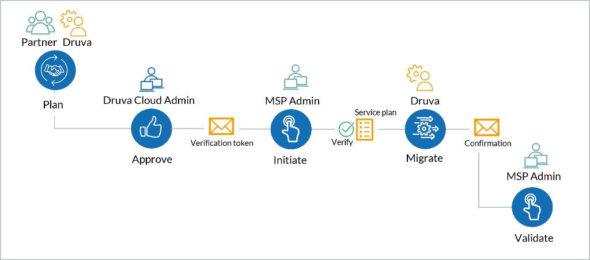
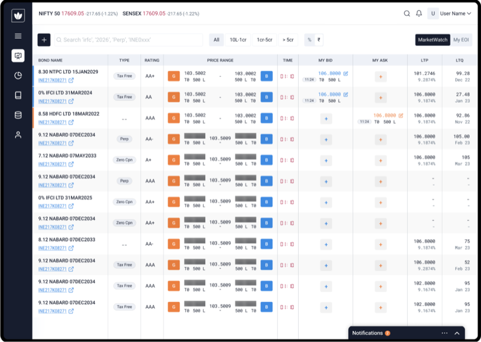
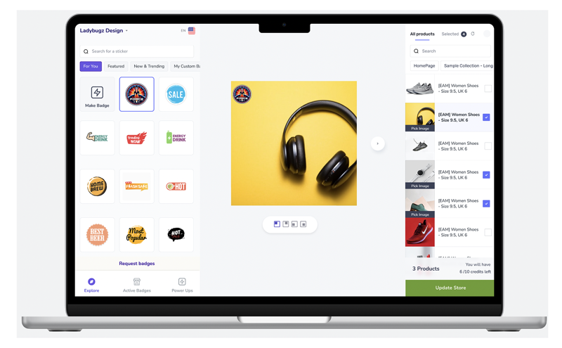

Selected projects
Enterprise B2B SaaS across cybersecurity, fintech, and healthtech — from 0→1 to production.

MSC Operational Dashboard
One overloaded MSP console split into three job-focused surfaces — accounts & licensing, usage monitoring, and backup triage — so partners can act without hunting across tenants.
View case study →
Identity Resilience
Redesigned a flat identity activity table into a node-based attack graph so analysts can see relationships, blast radius, and the path to restore trust — not row-by-row noise.
View case study →
Security Readiness Score
Collapsed six scattered security settings into one readiness score and fix path — so Cloud Admins can discover Cyber Resiliency and close Mandatory and Recommended gaps without hopping pages.
View case study →
Provisioning & Access
Self-serve product expansion for MSP partners — plan, approve, initiate, migrate, and validate without filing a support ticket each time.
View case study →
Harmoney
Founding design for India’s first digital B2B bond trading platform — a unified marketplace that streamlines trading for institutions, wealth firms, and brokers.
View case study →
ModeMagic
Shopify Commerce Award redesign that turned a badge tool into seller-facing automation — select badge, choose products, update store — and grew weekly active users 8×.
View case study →Dashboard
Research case study on designing a dense SaaS dashboard — hierarchy, KPIs, and scan paths — applied to drone fleet management as a reusable ops pattern.
View case study →
Theraxis
End-to-end PRD → design → live web build for pediatric therapy centers — clinical, billing, and scheduling in one gated system. Parent mobile still in progress.
View case study →No projects in this category yet.